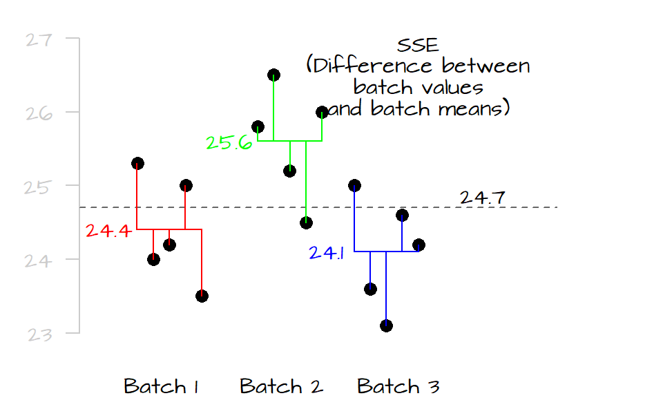
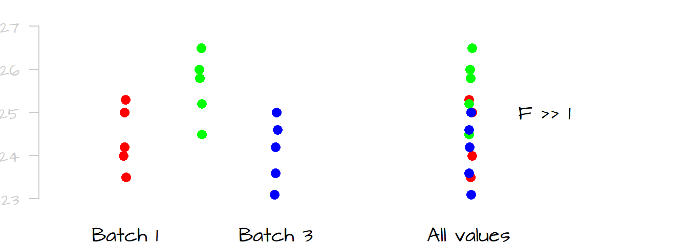

ANOVA
Last modified on 2023-04-06
Package used in this tutorial:
library(tidyr) # Used to reshape a data table
library(ggplot2)1 Introduction
Analysis of Variance (ANOVA) seeks to compare the means between two or more batches of numbers. You can think of an ANOVA as an extension of the t-test where three or more batches need to be compared. The name may seem misleading since it suggests that we are comparing variances and not some central value, but in fact, we compare the variances (spreads) between batches to assess if the central values are significantly different from one another. For example, let’s compare the following batches of numbers:
Given the very small overlap in spread between batch 2 and the two other batches, it’s obvious that batch 2 is significantly different from batches 1 and 3, but can we say with a similar level of certainty that batch 1 is significantly different from batch 3? Probably not, the slight offset in spread between batch 1 and 3 may be due to chance alone.
A one-way ANOVA compares measurement means between a single group of levels or batches. ANOVAs can be extended to include multiple groups (each having different levels). An ANOVA that compares means between two groups (each having their own set of levels) is referred to a two-way ANOVA.
2 How a one-way ANOVA is calculated
This section focuses on one group of levels (hence a one-way ANOVA).
2.1 The variance-ratio method
An ANOVA test seeks to compare the spread between the batches (technically referred to as levels).
The first step is to sum the square of the distances between each value (from all levels) to the grand mean computed from all values (plotted as a dark dashed line in the following graphic). We’ll call this value the total sum of squares for the mean (\(SSE_{mean}\)). It’s calculated as follows:
\[ SSE_{mean} = \sum (y - \bar{\bar y})^2 \]
where \(\bar{\bar{y}}\) is the mean for all values. In this example, \(\bar{\bar y}\) equals 24.7. In the following plot, we spread out the values in each level (for clarity) and measure their distances to the grand mean. Each level is assigned a unique color to distinguish the different batches.

Next, we compare the values in each level to their respective level means. Similar to the way we compute the \(SSE_{mean}\), we sum the squared differences for each level as follows:
\[ SSE = \sum (y_{batch1} - \bar y_{batch1})^2 + \sum (y_{batch2} - \bar y_{batch2})^2 + \sum (y_{batch3} - \bar y_{batch3})^2 \]
Where \(SSE\) is the error sum of squares.

If the mean values of all three levels are the same, their horizontal lines should line up with the grand mean and both \(SSE_{mean}\) and \(SSE\) should be equal, if not, \(SSE\) will be less than \(SSE_{mean}\) (the distance between the points and their respective level mean will always be equal or shorter than their distances to the overall mean). The difference between \(SSE_{mean}\) and \(SSE\) is called the treatment sum of squares (also referred to as the model sum of squares):
\[ SSR = SSE_{mean} - SSE \]
If SSR is close to 0, then the differences between the levels is small, if SSR is large, then two or more of the levels are significantly different from one another. SSR is, in fact, the squared difference between each group’s mean and the grand mean. Think of two competing models to predict the observed values: the grand mean, and each level’s mean. If the level means are close to the grand mean, then both the level means and grand mean will generate the same expected values. If they are different, then they will generate different expected values. So the greater the SSR, the more different the predicted values (and therefore the more different the means).

The goal is to compare the variability in \(SSE\) to that in \(SSR\), however, \(SSR\) can take on much larger values than \(SSA\) (because \(SSR\) is measuring from the group means and not the individual values). To remedy this bias, we compute the mean squares from both values by dividing the sum of squares by the degrees of freedom. For \(SSR\), this gives us: \[ MSR = \frac{SSR}{p-1} \]
where \(MSR\) is the mean square for treatments (or mean square for model), and \(p\) is the number of levels (3 in this example).
Likewise, we can compute the mean square for error as:
\[ MSE = \frac{SSE}{n-p} \]
where \(n\) is the total number of observations.
Next, we compute the \(F\)-statistic (or \(F\)-ratio) as:
\[ F = \frac{MSR}{MSE} \]
\(F\) gives us the proportion of the overall spread in the measurements that can be explained by the levels vs. the proportion of the overall spread in the measurements not explained by the levels. A value of \(F\) that approaches \(1\) indicates that little to none of the variability in the measurements can be explained by the levels suggesting that differences in their mean may be due to random noise only. If \(F\) is much larger than one, then the spreads between levels are quite different (meaning that these differences are large contributors to the overall spread) suggesting that the observed differences in mean values are significant too.
The following graphic shows the spread for all values in the data (right-side plot) and its spread broken down by levels (left-side plot). In this case, it seems that a good chunk of the overall spread can be explained by the differences in spread between levels. If this is still unclear, picture the plots with the measurements for batch 2 removed; what you would note is that the overall spread will be noticeably reduced suggesting that the measurements in level two alone were an important contributor to the overall spread.

Contrast this last example with the following dataset where the differences in spread (and mean) between levels are negligible. Removing anyone of the batches from the dataset would have a negligible impact on the overall spread in the measurements. We would say that little of the spread (variability) in the overall measurements can be explained by differences in measurements between levels; this would result in an \(F\)-ratio close to \(1\).
To assess whether a value of \(F\) is significantly greater than 1, we must compare our observed \(F\) to a distribution of \(F\)’s we would expect to get if the means between levels were not different (we refer to the hypothesized \(F\) values as \(F_{Ho}\)).
In the following plot, a hypothetical \(F\) ratio (plotted as a vertical red line) is located to the right of the distribution of \(F_{Ho}\) values (delineated in a black line in the following plot). The shaded pink area to the right of the hypothetical \(F\) represents the fraction of \(F_{Ho}\) that would be more extreme than our observed \(F\). The goal is to assess whether or not we feel comfortable in concluding that our observed \(F\) is significantly different from an \(F\) we would expect to get if the means between batches were all the same.
2.2 An example in R
In this working example, we compare fecal coliform counts (represented as the log10 of organisms per 100 ml) in the Illinois River between seasons (summer, fall, winter and spring) across six years (data from Millard and Neerchal, 2001).
| Year | Summer | Fall | Winter | Spring |
|---|---|---|---|---|
| 1971 | 2.00 | 1.45 | 1.45 | 1.34 |
| 1972 | 2.34 | 2.08 | 1.76 | 1.72 |
| 1973 | 2.48 | 2.32 | 2.08 | 2.04 |
| 1974 | 2.63 | 2.45 | 2.36 | 2.15 |
| 1975 | 2.81 | 2.70 | 2.49 | 2.51 |
| 1976 | 3.20 | 3.04 | 2.70 | 3.11 |
Let’s first generate the data. We will create two data frames of the same data. One will be in a wide format, the other in a long format. We will use the former to generate a plot and the latter will be used in the ANOVA analysis.
# Create a data frame
dat <- data.frame( Year = c(1971,1972,1973,1974,1975,1976),
Summer = c(2.00, 2.34, 2.48, 2.63, 2.81, 3.20),
Fall = c(1.45, 2.08, 2.32, 2.45, 2.70, 3.04),
Winter = c(1.45, 1.76, 2.08, 2.36, 2.49, 2.70),
Spring = c(1.34, 1.72, 2.04, 2.15, 2.51, 3.11))
# However, to run an ANOVA, the data needs to be in a long form
library(tidyr)
dat.long <- gather(dat, key = "Season", value="Value", -Year)Next, let’s plot the points then add the grand mean (black line) and each season’s mean (red lines) to the plot.
# Create an empty plot
plot( NULL, xlim= c(0.5,4.5), ylim=c(1, 3.5), axes=FALSE, xlab=NA,ylab="Fecal Coliform")
box()
axis(1, labels = names(dat)[-1], at=c(1,2,3,4))
axis(2, las=2, )
points(rep(1,nrow(dat)), dat$Summer, pch=1)
points(rep(2,nrow(dat)), dat$Fall, pch=2)
points(rep(3,nrow(dat)), dat$Winter, pch=3)
points(rep(4,nrow(dat)), dat$Spring, pch=4)
# Add the grand mean
abline(h = mean(dat.long$Value), lty=3)
# Add each group's mean
lines(c(.8,1.2), rep(mean(dat$Summer),2), col="red" )
lines(c(1.8,2.2), rep(mean(dat$Fall),2), col="red" )
lines(c(2.8,3.2), rep(mean(dat$Winter),2), col="red" )
lines(c(3.8,4.2), rep(mean(dat$Spring),2), col="red" )A quick glance at the plot suggests that the variance within each season is large relative to the differences in means between each seasons. But could summer values be slightly higher than those of other seasons? We check this assumption with an ANOVA test.
2.2.1 Computing ANOVA the hard way
SSE.m <- sum( (dat.long$Value - mean(dat.long$Value))^2 )
SSE <- sum( (dat$Summer - mean(dat$Summer))^2 +
(dat$Fall - mean(dat$Fall))^2 +
(dat$Winter - mean(dat$Winter))^2 +
(dat$Spring - mean(dat$Spring))^2 )
SSR <- SSE.m - SSE
MSR <- SSR / 3 # (p - 1) or 3 degrees of freedom
MSE <- SSE / 20 # (n - p) or 20 degrees of freedom
Fratio <- MSR/MSE
p.val <- pf(Fratio, 3, 20,lower.tail=FALSE)The function pf() compares our \(F\)-ratio to the distribution of \(F_{Ho}\) values one would expect to get if the means between seasons were not different. The two numbers following the \(F\)-ratio value are the degrees of freedom for the \(MSR\) and the \(MSE\) calculated from \((p-1)\) and \((n-p)\) respectively.
The computed statistics are:
| Statistic | Value |
|---|---|
| SSE(mean) | 6.11 |
| SSE | 5.35 |
| SSR | 0.77 |
| MSR | 0.26 |
| MSE | 0.27 |
| F | 0.96 |
| p | 0.433 |
Our calculated p-value is 0.433 indicating that about 43% of the \(F_{Ho}\) values are more extreme than ours. So it would be unwise to dismiss the chance that the means between all four seasons are equal to one another.
2.2.2 Computing ANOVA the easy way
We can use the anova function to compute the \(F\)-ratio and the \(p\)-value. The function takes as argument a model (a linear regression model in this case) where the dependent variable \(y\) is the measurement value and the independent variable \(x\) is the level (or seasons in our example). This implementation of ANOVA requires that the season values be in one column (the \(x\) column) and that the measurements be in another column (the \(y\) column). This requires that we use the long version of our table, dat.long, where the \(x\) column is labeled Season and the \(y\) column is labeled Value. The first few rows of dat.long look like this:
head(dat.long) Year Season Value
1 1971 Summer 2.00
2 1972 Summer 2.34
3 1973 Summer 2.48
4 1974 Summer 2.63
5 1975 Summer 2.81
6 1976 Summer 3.20The ANOVA analysis is thus computed as:
anova(lm(Value ~ Season, dat.long))Analysis of Variance Table
Response: Value
Df Sum Sq Mean Sq F value Pr(>F)
Season 3 0.7666 0.25554 0.9556 0.4328
Residuals 20 5.3483 0.26741 The column Mean Sq displays the mean sum-of-squares for treatment \(SSR\), and the error sum-of-square, \(SSE\). The \(F\)-ratio and \(p\)-value are the same as those computed in the last subsection. Again, there is no evidence that the seasons have an influence on the mean concentrations of fecal coliform counts.
2.2.3 ANOVA as a regression
You’ll note that this approach in computing the ANOVA makes use of the linear regression function lm. This is because a one-way ANOVA is nothing more than a regression between all values in the batches and their levels expressed as categorical values where the number of categorical values is the number of levels minus \(1\). In essence the ANOVA is generating the following model:
\(Coliform\ count = a + b(FALL) + c(Winter) + d(Spring)\)
So, if a value belongs to the FALL batch, the model looks like this:
\(Coliform\ count = a + b(1) + c(0) + d(0)\)
If the value belongs to the SUMMER batch, the model looks like this:
\(Coliform\ count = a + b(0) + c(0) + d(0)\)
where \(a\) is the mean value for summer coliform measurements. It follows that the coefficients \(b\), \(c\) and \(d\) are differences in mean values between summer measurements and fall, winter and spring measurements respectively:
\(a\) = mean(dat$Summer) = 2.58
\(b\) = mean(dat$Fall) - mean(dat$Summer) = -0.24
\(c\) = mean(dat$Winter) - mean(dat$Summer) = -0.44
\(d\) = mean(dat$Spring) - mean(dat$Summer) = -0.43
These coefficients can be extracted from the lm model via the coefficients function.
coefficients( lm( Value ~ Season, dat.long) ) (Intercept) SeasonSpring SeasonSummer SeasonWinter
2.3400000 -0.1950000 0.2366667 -0.2000000 Note that R has a built-in function called
aov()that can be used in lieu oflm(). The computed model will be the same but the functions differ slightly in their methods. Examples of its use are presented later in the tutorial.
3 Assumptions of ANOVA
There are three assumptions that should be met when computing an ANOVA:
- The response variable must be quantitative (i.e. measured on a continuous scale). It should not be a count (i.e. the result of qualitative outcome such as yes/no).
- The variance between the batches (homogeneity of variance) should be similar.
- Observations should be independent of one another.
- The distribution of values within each group should be normally distributed. If a transformation is applied to the data, it should be applied to all batches. Note that the distribution of values for all combined batches need not be normally distributed.
You can check these assumptions graphically by plotting the results of the ANOVA analysis.
OP <- par(mfrow=c(1,2))
plot(lm(Value ~ Season, dat.long), 1:2)
par(OP)The Residuals-Fit plot checks that the variance is constant across groups. What you want to avoid is a funnel like shape to the data (which may be present in this example). The Normal Q-Q plot checks for normality in the residuals–the closer the points fit the diagonal line, the better.
If normality in the residuals seems to be an issue, then you might want to consider re-expressing your data (note that we already re-expressed the coliform count by logging its values–had he worked with the original data the assumption of normality would have been violated).
If the assumption of equal variance is violated, you might want to run the analysis using oneway.test() (which applies Welch’s F to the data):
oneway.test(Value ~ Season, dat.long)
One-way analysis of means (not assuming equal variances)
data: Value and Season
F = 1.092, num df = 3.000, denom df = 10.998, p-value = 0.3931Note the slightly higher F-value and p-value (but not enough to change the analysis outcome)
4 Identifying which levels are different
So far, we have seen that the ANOVA test tells us if the means between batches (levels) are similar, but it does not tell us which batch(es) of numbers may be different. One approach in assessing which level(s) is(are) significantly different from the mean is to implement a post hoc procedure (aka pairwise comparison).
There are many post hoc procedures to choose from. Two popular methods are presented here: the Bonferroni procedure and Tukey’s HSD procedure. Both tend to generate slightly different results depending on the data characteristics. It’s therefore worthwhile to run both to assess if the levels are significantly different from one another. But note that in many cases there is no substitute for a visual assessment of the differences between batches.
4.1 Bonferroni
The Bonferroni method can be implemented using the pairwise.t.test function with the first two parameters pointing to the column of values and the column of variables respectively, and the third parameter pointing to the pairwise method.
pairwise.t.test( dat.long$Value, dat.long$Season, p.adjust.method = "bonferroni")
Pairwise comparisons using t tests with pooled SD
data: dat.long$Value and dat.long$Season
Fall Spring Summer
Spring 1.00 - -
Summer 1.00 0.98 -
Winter 1.00 1.00 0.95
P value adjustment method: bonferroni The output is a matrix of \(p\)-values for different pairs of levels (Fall-Summer, Winter-Summer, etc…). A low \(P\)-value indicates significant differences between levels. In our working example, all \(P\)-values are relatively high indicating that the means between levels are not statistically significant.
4.2 Tukey’s HSD
The Tukey method is implemented using the TukeyHSD method. The first parameter is an aov object (aov is nearly identical to the anova(lm(...)) method used thus far), and the second variable is the levels column from the data.
TukeyHSD( aov( Value ~ Season, dat.long), "Season") Tukey multiple comparisons of means
95% family-wise confidence level
Fit: aov(formula = Value ~ Season, data = dat.long)
$Season
diff lwr upr p adj
Spring-Fall -0.1950000 -1.0306503 0.6406503 0.9132083
Summer-Fall 0.2366667 -0.5989836 1.0723170 0.8569058
Winter-Fall -0.2000000 -1.0356503 0.6356503 0.9071983
Summer-Spring 0.4316667 -0.4039836 1.2673170 0.4870045
Winter-Spring -0.0050000 -0.8406503 0.8306503 0.9999983
Winter-Summer -0.4366667 -1.2723170 0.3989836 0.4773334The Tukey method generates a table of \(P\)-values (as opposed to a matrix) for all pairs of levels. Note the slightly lower \(P\)-values than those generated with the Bonferroni method. The Tukey HSD method tends to be more conservative than the Bonferri method and is thus more likely to reject the null hypothesis (that the means are equal) than the Bonferri method. This comes with an advantage, however, in that the Tukey test tends to have greater statistical power when there are many different levels (or batches) in our dataset.
The Tukey test also generates the 95% confidence intervals (lwr = lower bound and upr = upper bound). If the lower bound is less than \(0\) and the upper bound is greater than \(0\) we cannot say that the means between both levels are not significantly different at a confidence level of 0.05.
4.3 Assumptions of the post hoc test
The post hoc procedure assumes that we are only interested in knowing which effect (if any) is different from the grand mean. It makes no assumption about the direction of this difference (i.e. if the level mean is greater than or less than the overall mean). This is analogous to implementing a two-tailed test.
If knowing whether the effect mean is greater than or less than the overall mean, a planned contrast procedure (aka planned comparison procedure) should be adopted instead. This procedure is not covered in this tutorial, but can be found in most introductory stats books.
5 Another working example
The coliform dataset was an example of effects that did not differ. Here, we’ll look at an example with differences in effect means. We’ll use a dataset that comes installed with R, the ChickWeight data. This dataset tracks the weights of chicks using different diet types. We will grab a subset of the data and only focus on day 21 measurements. We will also restrict the columns to Weight and Diet.
dat2 <- ChickWeight[ChickWeight$Time==21,c("weight", "Diet")]The group column is Diet which has four levels. These levels are identified as numbers (\(1\) through \(4\)). One needs to be careful when running an ANOVA using levels encoded as numbers since the lm model may interpret such values as continuous and not categorical. It’s therefore good practice to force the numbers as factors by using the as.factor function:
dat2$Diet <- as.factor(dat2$Diet)Note that in this particular case, the conversion was not necessary since the chickweight table from which we extracted the values stored the Diet field as a factor (and this attribute was carried over to our dat data frame).
Next, let’s plot the points along with the grand mean (dashed line) and each levels’ mean value (symbolized as a filled circle).
plot(weight ~ as.numeric(Diet), dat2, col=Diet, pch=3,cex=.6)
abline( h = mean(dat2$weight), lty=2)
points( unique(dat2$Diet) , by(dat2$weight, dat2[,"Diet"], mean) , pch=19, col=unique(dat2$Diet))One level, diet 3, seems to be a bit different from the others, but we will need to run and ANOVA to make sure of this.
anova(lm(weight ~ Diet, dat2))Analysis of Variance Table
Response: weight
Df Sum Sq Mean Sq F value Pr(>F)
Diet 3 57164 19054.7 4.6547 0.006858 **
Residuals 41 167839 4093.6
---
Signif. codes: 0 '***' 0.001 '**' 0.01 '*' 0.05 '.' 0.1 ' ' 1The small \(p\)-value suggests that not all levels have the same mean value. We can run a post hoc test to identify which level may be different
pairwise.t.test( dat2$weight, dat2$Diet, p.adjust.method = "bonferroni")
Pairwise comparisons using t tests with pooled SD
data: dat2$weight and dat2$Diet
1 2 3
2 0.9573 - -
3 0.0053 0.3533 -
4 0.1669 1.0000 1.0000
P value adjustment method: bonferroni TukeyHSD( aov( weight ~ Diet, dat2), "Diet") Tukey multiple comparisons of means
95% family-wise confidence level
Fit: aov(formula = weight ~ Diet, data = dat2)
$Diet
diff lwr upr p adj
2-1 36.95000 -32.11064 106.01064 0.4868095
3-1 92.55000 23.48936 161.61064 0.0046959
4-1 60.80556 -10.57710 132.18821 0.1192661
3-2 55.60000 -21.01591 132.21591 0.2263918
4-2 23.85556 -54.85981 102.57092 0.8486781
4-3 -31.74444 -110.45981 46.97092 0.7036249Both tests suggest that diet 3 is significantly different from diet 1, but the differences between the other levels are not significant.
6 Two-way ANOVA
A two-way ANOVA adds another factor (explanatory variable) to the analysis. For example, in the earlier fecal coliform count dataset (Section 2.2), coliform counts were only compared across season yet, another piece of information is made available to us: year. We could choose to treat year as a second factor. This would add a second hypothesis to our analysis, that being “can year help explain the variability in coliform count” (the first hypothesis asks if seasons can explain the variability in the coliform count).
While a one-way ANOVA does not make sense if the data are devoid of replicates, a two-way ANOVA can be conducted if the data do not have replicates (referred to as an unreplicated two-way ANOVA). The implementation does not differ between both scenarios except when testing for interaction (described further below).
The dat.long dataframe is a replicatless dataset. What follows is a replicated version of the dataset (used later in demonstrating for interactions). Note that this dataset is used for instructional purposes only and is not the way you would create replicate measurements!
set.seed(321)
datr.long <- data.frame( Year = rep(rep(c(1971,1972,1973,1974,1975,1976),each=3),4),
Season = rep(c("Summer","Fall","Winter","Spring"),each=18),
Value = rep(dat.long$Value,each=3) + rnorm(72,0,0.1))In the following examples, we will use the dat.long dataset but note that the same code chunks can be applied to the datr.long dataset.
First we’ll visualize the variability across each factor via boxplots:
boxplot(Value ~ Year, dat.long)
boxplot(Value ~ Season, dat.long)The differences in (logged) coliform counts across years appear significant from the plots. More so than the differences across seasons.
A two-way ANOVA test assesses how much of an effect (if any) each factor has on the variable. The implementation in R is simple–just add the Year variable to the one-way ANOVA function shown in Section 2.2.2.
anova(lm(Value ~ Season + as.factor(Year), dat.long))Analysis of Variance Table
Response: Value
Df Sum Sq Mean Sq F value Pr(>F)
Season 3 0.7666 0.25554 17.574 0.0000357897957 ***
as.factor(Year) 5 5.1302 1.02603 70.562 0.0000000006975 ***
Residuals 15 0.2181 0.01454
---
Signif. codes: 0 '***' 0.001 '**' 0.01 '*' 0.05 '.' 0.1 ' ' 1Note that we are wrapping the Year variable with the as.factor function to force R to treat that variable as a factor and not a continuous variable (it’s currently stored in R as a numeric and not a factor).
The p-values appear significant for both factors (you’ll recall that an earlier one-way analysis suggested that seasons had little influence on the variability on coliform counts). This discrepancy can be partially explained by looking at a boxplot of the residuals vs. Season (i.e. the residuals that remain after accounting for Year alone in the model).
res <- residuals(lm(Value ~ as.factor(Year), dat.long))
boxplot(res ~ dat.long$Season)Accounting for variability across years reveals a greater spread in values across seasons (hence the drop in that factor’s p-value in a two-way analysis).
The two-factor model coefficients can be extracted as follows:
coefficients(lm(Value ~ Season + as.factor(Year), dat.long)) (Intercept) SeasonSpring SeasonSummer SeasonWinter as.factor(Year)1972 as.factor(Year)1973
1.5995833 -0.1950000 0.2366667 -0.2000000 0.4150000 0.6700000
as.factor(Year)1974 as.factor(Year)1975 as.factor(Year)1976
0.8375000 1.0675000 1.4525000 The model is thus,
\(Coliform_{log} = 1.60 - 0.19 Spring +0.24 Summer -0.20 Winter + \\ 0.42 Year_{1972} +0.67 Year_{1973} +0.840 Year_{1974} + 1.07 Year_{1975} + 1.45 Year_{1976}\)
So if we want to predict (log) Coliform counts for the Fall season of 1976, the model would take the form:
\(Coliform_{log} = 1.60 - 0.19(0) +0.24(0) -0.20(0) + 0.42 (0) + 0.67(0) +0.840(0) + 1.07(0) + 1.45(1)\)
or
\(Coliform_{log} = 1.60 + 1.45(1)\)
Note that the Fall coefficient, like the 1971 coefficient, is wrapped in the intercept term.
6.1 Checking for interaction (non-additive model)
Note that it makes no sense to test for interactivity if you do not have replicates (i.e. if you have just one case per factor level combinations) since you may not be able to distinguish the error terms from the residuals. In the examples that follow, we’ll make use of the
datr.longdataset which has (simulated) replicates.
We need to check that the additive model we’ve chosen is appropriate for this dataset. A graphical approach involves plotting the values as a function of one factor using a line graph (where each line represents the levels of the other factor). This is sometimes referred to as an interactive plot. We’ll make use of the built-in interaction.plot function where one of the factors (Year) will be mapped to the x-axis and the other factor (Season) will be mapped to the line plots. This function does not have a data=... parameter telling it which data frame to work off of so we’ll wrap the function with the with() function which defines the data frame from which the variables are to be read from.
with(datr.long, interaction.plot(as.factor(Year), Season, Value))We are seeking parallel lines. The more non-parallel the lines, the more unlikely an additive model is a proper fit. If the lines are clearly not parallel, then there is interaction between the factors and an interaction term is probably needed in the model. If we chose to add an interaction component to our model, we would simply augment the formula by adding as.factor(Year):Season:
anova(lm(Value ~ Season + as.factor(Year) + as.factor(Year):Season, datr.long))Analysis of Variance Table
Response: Value
Df Sum Sq Mean Sq F value Pr(>F)
Season 3 2.6276 0.87588 86.9506 < 0.00000000000000022 ***
as.factor(Year) 5 14.9474 2.98948 296.7720 < 0.00000000000000022 ***
Season:as.factor(Year) 15 0.6324 0.04216 4.1856 0.00007479 ***
Residuals 48 0.4835 0.01007
---
Signif. codes: 0 '***' 0.001 '**' 0.01 '*' 0.05 '.' 0.1 ' ' 1The p-value associated with the interactive term as.factor(Year):Season is small suggesting that the interaction should not be ignored. Note that had the two-way ANOVA been run on the replicate-free version of the data (dat.long), the code chunk would not have generated p-values.
Coefficients can be extracted using the coefficients() function.
coefficients(lm(Value ~ Season + as.factor(Year) + as.factor(Year):Season, datr.long)) (Intercept) SeasonSpring SeasonSummer
1.514706536 -0.219142681 0.509122788
SeasonWinter as.factor(Year)1972 as.factor(Year)1973
-0.089699659 0.558927966 0.705495273
as.factor(Year)1974 as.factor(Year)1975 as.factor(Year)1976
0.896043592 1.169276817 1.564987568
SeasonSpring:as.factor(Year)1972 SeasonSummer:as.factor(Year)1972 SeasonWinter:as.factor(Year)1972
-0.055451015 -0.241938153 -0.271609111
SeasonSpring:as.factor(Year)1973 SeasonSummer:as.factor(Year)1973 SeasonWinter:as.factor(Year)1973
0.131119255 -0.206021571 -0.007361442
SeasonSpring:as.factor(Year)1974 SeasonSummer:as.factor(Year)1974 SeasonWinter:as.factor(Year)1974
-0.119064438 -0.247193634 0.090749725
SeasonSpring:as.factor(Year)1975 SeasonSummer:as.factor(Year)1975 SeasonWinter:as.factor(Year)1975
0.050233770 -0.333834613 -0.129534625
SeasonSpring:as.factor(Year)1976 SeasonSummer:as.factor(Year)1976 SeasonWinter:as.factor(Year)1976
0.165218848 -0.386425892 -0.317247156 Note that one disadvantage in having so many terms in the model is that you reduce the power of the model. In this example we now have 23 variables and a little more than three times as many measurements (72 to be exact). It’s always good practice to seek the most parsimonious model possible. This may involve, for example, grouping factor levels if theory supports it.
6.2 Extracting effects for each level
The regression model will wrap one level’s effect from each factor into the intercept term however, you might wish to know each level’s effect on the measured variable. This requires decomposing the model’s intercept into an overall mean measurement and two level effects (one for each factor). This can be done by running the ANOVA analysis using aov() then wrapping its output with the model.tables() function as follows:
M1 <- aov(Value ~ Season + as.factor(Year), dat.long)
model.tables(M1)Tables of effects
Season
Season
Fall Spring Summer Winter
0.03958 -0.15542 0.27625 -0.16042
as.factor(Year)
as.factor(Year)
1971 1972 1973 1974 1975 1976
-0.7404 -0.3254 -0.0704 0.0971 0.3271 0.7121 The overall mean (and new model intercept) can be extracted from the original table as follows:
mean(dat.long$Value)[1] 2.300417While this approach expands the model by adding two more variables, it does allow one to quantify the effect each level has in explaining the coliform counts. For example, the model suggests that the overall mean (log) coliform count is 2.3 but the Spring seasons lower that value by about -0.155. Likewise, we can state that the year 1975 increases the overall mean by about 0.327. It’s also clear from the output that 1971 had the greatest effect on coliform count by dropping the overall value by -0.7404.
Note, however, that if the model has a significant cross-factor interaction effect, you should not attempt to draw anything too meaningful from the main level effects. In such a scenario, the most meaningful result to glean from the model is the interaction between the factors.
7 References
Millard S.P, Neerchal N.K., Environmental Statistics with S-Plus, 2001.
McClave J.T., Dietrich F.H., Statistics, 4th edition, 1988.
Vik P., Regression, ANOVA, and the General Linear Model: A Statistics Primer, 2013.